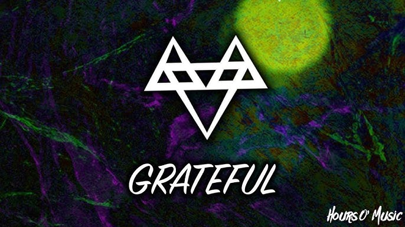

Grateful
Song by NEFFEX
Original video

[Intro]
Always do it on my own, so, I gotta get through it
And the only thing I know is to love what I'm doing
Never give up, never slow 'til I finally prove it
Never listen to the no's, I just wanna keep moving
[Verse 1]
Keep my head up when I act, head up, that's a fact
Never looking back, I'ma keep myself on track
Keep my head up, staying strong, always moving on
Feel I don't belong, tell my thoughts to move along
Push myself to be the best, die with no regrets
Live with every breath, see my message start to spread
And I have so many dreams then you hit your teens
Life ain't really what it seems, try to find out what it means
[Chorus]
(Yeah, yeah, yeah)
Always do it on my own, so, I gotta get through it
And the only thing I know is to love what I'm doing
Never give up, never slow 'til I finally prove it
Never listen to the no's, I just wanna keep moving
Yeah, I put out all this art, it's my only medicine, yeah
Everything I do, I'm just being genuine, yeah
I'm sick of being screwed, feel my own adrenaline
Yeah, I do just what I do and I hope you let me in, let me in, yeah
[Drop]
I'm grateful, oh, yeah, able, oh, yeah
I'm stable, oh, yeah, no label, oh, yeah
You know me, I have only a path
I'm lonely, but, damn, I'm going to win, yeah
[Verse 2]
I don't want no fake love, I want the real stuff
Everybody listen up 'cause I'll only say it once
I'm gon' show you all the path if you want it bad
I'm gon' show you where it's at
Yeah, how you can get it back, yeah
'Cause I ain't never done, I'll be number one
Working hella hard until I get just what I want, yeah
Rise just like the sun, yeah, fatal like a gun
Shooters gonna shoot and I'm gon' shoot until I've won, yeah
[Chorus]
(Yeah, yeah, yeah)
Always do it on my own, so, I gotta get through it
And the only thing I know is to love what I'm doing
Never give up, never slow 'til I finally prove it
Never listen to the no's, I just wanna keep moving
Yeah, I put out all this art, it's my only medicine, yeah
Everything I do, I'm just being genuine, yeah
I'm sick of being screwed, feel my own adrenaline
Yeah, I do just what I do and I hope you let me in, let me in, yeah
[Drop]
I'm grateful, oh, yeah, able, oh, yeah
I'm stable, oh, yeah, no label, oh, yeah
You know me, I have only a path
I'm lonely, but, damn, I'm going to win, yeah (Yeah)